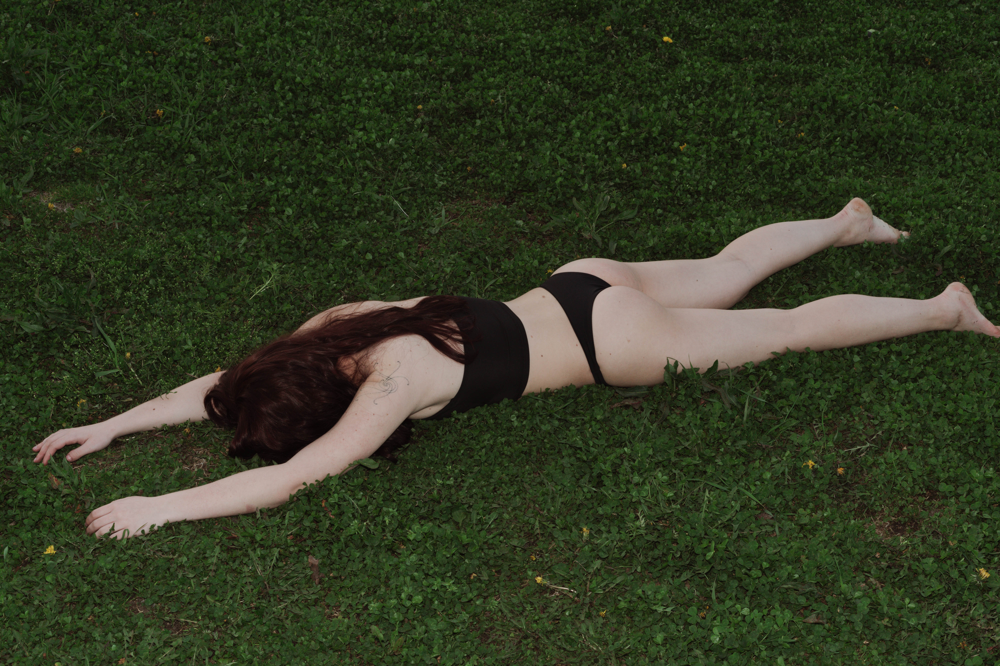

CHLOE O'NEILL IS A MULTIMEDIA ARTIST, WITH A FOCUS IN VISUAL COMMUNICATION DESIGN AND PHOTOGRAPHY. SHE SPECIALIZES IN CRAFTING UNIQUE BRAND STORIES AND EXPERIENCES THROUGH A COMBINATION OF GRAPHIC DESIGN, PHOTOGRAPHY, BRANDING, AND ART DIRECTION. HER PHOTOGRAPHIC PRACTICE EXPLORES THE AWKWARD, EPHEMERAL, AND OFTEN SEXUALIZED NATURE OF THE BODY, ANALYZING THE MEANING OF THE SELF THROUGH PHYSICAL DISCOMFORT. SHE IS CURRENTLY A THIRD-YEAR STUDENT AT THE SCHOOL OF THE ART INSTITUTE OF CHICAGO.
